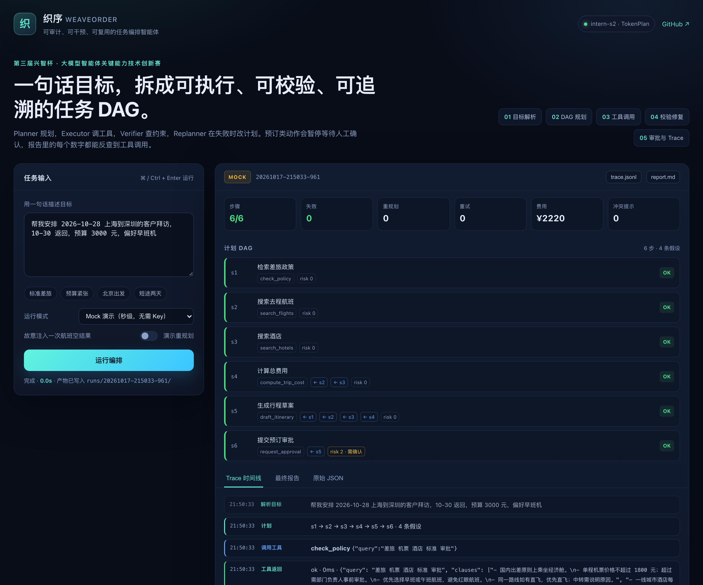
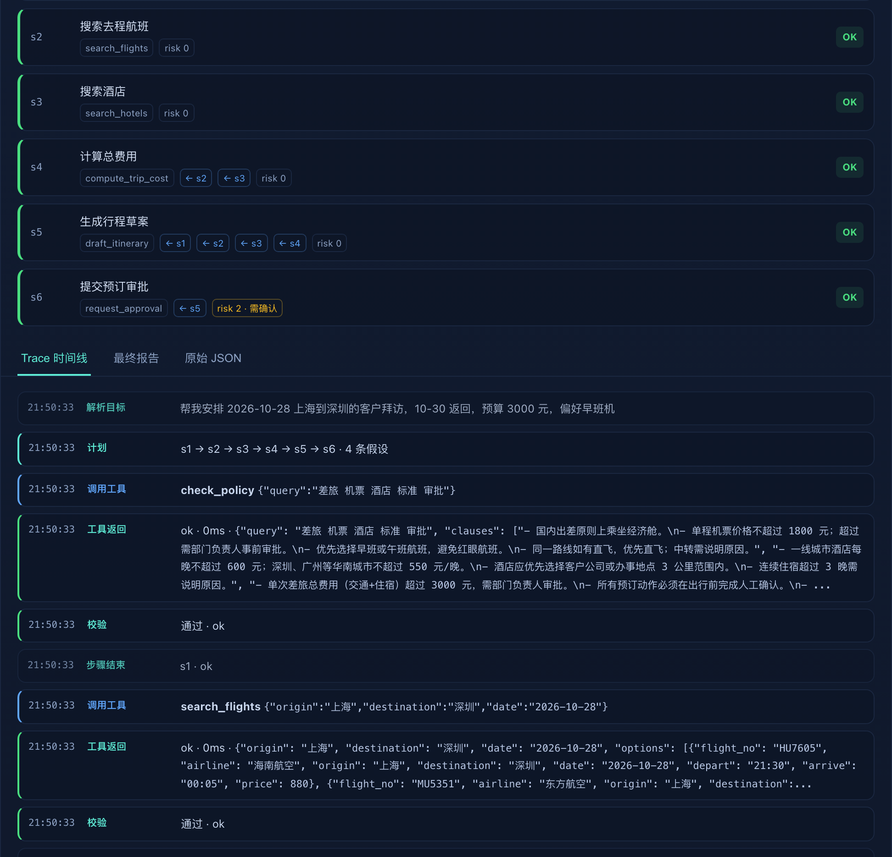

问题。企业差旅安排不是一个问答问题：要查政策、比价、算预算、校验合规、走审批。普通聊天机器人能给出建议，但不能保证每一步真的执行、真的合规、真的可追溯。
方案。织序把一句自然语言目标解析成带依赖的任务 DAG，用 Planner–Executor–Verifier–Replanner 循环完成工具调用、约束校验和失败修复；高风险动作在执行前暂停，等待人工确认；每一步的工具参数、返回值、校验结论和重规划原因都写入 Trace。
实现。基于书生 Intern-S2（TokenPlan，OpenAI 兼容接口），不训练、不微调；工具层通过 MCP server 和 Agent Skill 对外复用；Web UI 展示计划 DAG、Trace 时间线和最终报告。
结果。Mock 功能评测 10/10 通过；真实 LLM 评测 2/2 通过；真实模式下单次规划耗时约 3–4 分钟，主要来自 Intern-S2 的 reasoning token。失败注入、超预算修复、审批拒绝三条关键路径均已跑通。
“帮我安排 2026-10-28 上海到深圳的客户拜访，10-30 返回，预算 3000 元，偏好早班机。”
这句话背后至少有七个约束：日期、路线、预算、舱位、酒店标准、早班偏好、审批要求。一个合格的执行者需要：查政策、搜航班、搜酒店、比较价格与位置、计算总费用、发现冲突、决定是否申请例外、预订前找负责人确认。普通聊天机器人通常只完成“给建议”这一步；一旦航班售罄、酒店超标准或预算不够，它不会自己改计划，也不会留下可审计的证据。
本题要求参赛团队基于上海人工智能实验室书生大模型，结合任意 harness，以及 MCP、A2A、Agent Skills、多智能体协同编排、上下文工程、长周期记忆、Computer Use 等技术，自选方向构建智能体应用。织序选择官方“方向 3：开放赋能智能体”：自主选题、需求拆解、工具编排、任务自主规划、结果稳定输出，形成可直接复用的轻量化方案；落地场景为企业差旅。
| 官方要求 | 本项目的对应实现 |
|---|---|
| 基于书生大模型 | Intern-S2，经 TokenPlan 的 OpenAI 兼容接口调用；单次规划显式设置 8192 max tokens 以容纳 reasoning |
| 工具调用 / 自主规划 | 类型化 Tool Registry + DAG Planner + 依赖调度 + Verifier + Replanner |
| 多智能体协同 / 上下文工程 | Planner–Executor–Verifier–Replanner 角色化编排，Blackboard 汇总中间结果，Trace 记录上下文演化 |
| MCP / Agent Skills | stdio JSON-RPC MCP server，暴露 7 个工具；`skills/travel-orchestration/SKILL.md` 封装工作流与护栏 |
| 完整性 / 实用性 / 技术难度 | CLI + Web UI + mock/live 双路径；真实差旅场景；编排、校验、恢复、审批、可观测五项技术点 |
风险分级；预订、付款、发送类动作默认 `risk=2`，执行前必须人工确认；拒绝不会让任务崩溃，报告保留已完成部分。
计划、工具参数、返回值、校验结论、重规划原因、审批结果全部写入 `trace.jsonl`；报告中的结论可反查到具体调用。
工具层与编排层解耦；同一套引擎可以替换工具集，迁移到其他企业流程；MCP/Agent Skill 让外部 harness 直接复用。
不训练、不微调，全部推理走 API；mock 模式让没有 Key 的评委也能复现完整流程。
图 2-1 织序的分层架构：入口、编排引擎、工具层、模型层。工具层同时以 MCP server 形式暴露，外部 harness 可以跳过编排引擎直接调用工具。
政策检索与航班/酒店搜索互不依赖，可以并行；费用依赖航班与酒店；行程依赖全部结果。DAG 让依赖关系显式化，重规划时只改受影响子图。
模型心算会错。`compute_trip_cost` 把“机票 + 酒店单价 × 晚数”封装成确定性函数，Verifier 再核对总额与明细，避免“看起来合理但算错”的报告。
预算、政策、费用一致性都可以用代码判定，比 LLM judge 更便宜、更稳定。只有“建议是否可执行”这类定性条件才交给模型。
评委、复现者不一定有 Key 或网络；mock 模式用规则规划和固定数据跑通同一套编排、校验、Trace，降低体验门槛。
计划不是一段自然语言，而是结构化 JSON。每个步骤声明工具、参数、依赖、验收条件和风险等级；参数可以用 `$step_id.path` 引用前序结果，避免把长 JSON 反复塞进提示词。
{
"id": "s4",
"goal": "计算总费用",
"tool": "compute_trip_cost",
"args": {"flight_price": "$s2.best.price",
"hotel_price": "$s3.best.price",
"nights": 2},
"depends_on": ["s2", "s3"],
"success": "总费用不超过 3000 元",
"risk": 0
}
调度器做拓扑排序，检测环和悬空依赖；执行器在调用前解析引用，调用后把结果写入 Blackboard，供后续步骤使用。
Planner 的 system prompt 约束：只能用注册工具、最多 8 步、参数必须满足 required、可以用 `$s1.path` 引用前序结果、费用合计优先用 `compute_trip_cost`。模型输出经 `extract_json` 解析和 `validate_plan` 校验；工具名不存在、缺必填参数、依赖悬空、计划有环都会触发回退。
规则回退不是“降级到固定流程”，而是保留同一套 DAG、工具、校验和 Trace，只是用确定性计划替代 LLM 计划。这样即使模型不可用，演示和复现仍然成立。
| 工具 | 作用 | 关键输出 |
|---|---|---|
check_policy | 检索差旅政策条款 | clauses / source |
search_flights | 按路线/日期搜索航班 | options / cheapest / best |
search_hotels | 按城市/日期搜索酒店 | options / cheapest / best |
compute_trip_cost | 机票 + 酒店单价 × 晚数 | total / hotel_total |
calculator | 受限算术 | value / result / total |
draft_itinerary | 组装行程草案 | markdown / summary |
request_approval | 高风险动作前人工确认 | approved / action / detail |
`mcp_server.py` 用 stdio JSON-RPC 暴露同一组工具，不依赖第三方 MCP SDK，Python 3.9+ 可运行。`skills/travel-orchestration/SKILL.md` 把“查政策→搜航班→搜酒店→算费用→组装→校验→审批”的工作流和护栏封装成 Agent Skill，Claude Code、OpenClaw 等 harness 可以直接复用。
Verifier 的失败原因必须是可执行的，例如“总费用 2220 超过预算 2000”，而不是笼统的“校验失败”。Replanner 据此决定放宽价格、换选项还是终止。
两类修复已经实现并验证：
修复动作写入 Trace，报告里的“执行摘要”会显示每一步的状态和原因。这样评委能看到“计划是活的”，而不是一个写死的流水线。
`request_approval` 默认 `risk=2`。CLI 模式会打印动作、工具、参数并等待输入；输入 `y` 通过，输入 `n` 标记 `skipped`，报告仍然保留。Web UI 为了演示流畅默认自动批准，但审批步骤、参数和结果仍然出现在计划与 Trace 中。
Trace 是事件溯源的：`intake`、`plan`、`tool_call`、`tool_result`、`verify`、`replan`、`approval`、`step_end` 每一类都有时间戳和上下文。报告里的每个数字都可以反查到具体工具调用和参数。
Web UI 用 FastAPI + 原生 HTML/CSS/JS，不依赖前端构建。左侧输入目标、选择 Mock/真实 LLM、勾选“注入航班空结果”；右侧展示指标、计划 DAG、Trace 时间线、报告和原始 JSON。失败注入和超预算修复可以一键演示。
目标：2026-10-28 上海→深圳，10-30 返回，预算 3000，偏好早班机。系统规划 6 步，选出 07:30 东航 MU5331（¥1180）和深圳南山智选假日酒店（¥520/晚 × 2 晚），总费用 ¥2220，在预算内；政策检索给出经济舱、酒店标准和审批条款。

图 4-1 Web UI（Mock 模式）：指标、计划 DAG、Trace 时间线与报告在同一页展示。真实 LLM 模式的计划由 Intern-S2 生成，结构与 Mock 一致。
勾选“注入一次航班空结果”后，第一次 `search_flights` 带 `max_price=800`，返回空；Verifier 判定“没有满足条件的航班”，Replanner 放宽到预算的 70% 重新搜索，成功；后续步骤继续。Trace 中可以看到 `verify ok=false → replan → verify ok=true (after_repair)` 的完整链路。

图 4-2 Trace 时间线：工具调用、返回摘要、校验结论、重规划和步骤结束逐条可见。
把预算改为 2000，正常计划总费用 2220 超预算；Replanner 压缩航班/酒店价格上限，得到 ¥1520 的方案。但这个方案只能选到 21:30 的红眼航班和距客户 6.5 km 的酒店；系统没有静默接受，而是在报告“风险与冲突”中明确写出两条冲突，提示需要人工确认或申请例外。
CLI 模式下，预订步骤会暂停：输入 `y` 通过，输入 `n` 标记 skipped。报告仍然生成，已完成的行程草案保留。Web UI 默认自动批准以保证演示流畅，但审批步骤、参数和 approved 状态仍写入 Trace。
评测目标是验证“编排层是否真的让同一套工具更可靠”，而不是刷某个公开榜单。10 个任务覆盖：标准路线、超预算修复、航班空结果恢复、换路线、中文日期、缺日期、预算过低失败、无数据失败、单晚费用。Mock 模式使用规则规划，因此可以精确核对总费用；Live 模式使用 Intern-S2，报告总费用和约束状态，不强制精确总额。
| Task | 结果 | 总费用 | 步骤 | 重规划 | 冲突提示 | 说明 |
|---|---|---|---|---|---|---|
| T01 | PASS | ¥2220 | 6/6 | 0 | 0 | 标准差旅，2 晚 |
| T02 | PASS | ¥1520 | 6/6 | 1 | 2 | 超预算压缩 + 红眼/距离提示 |
| T03 | PASS | ¥2220 | 6/6 | 1 | 0 | 航班空结果恢复 |
| T04 | PASS | ¥2390 | 6/6 | 0 | 0 | 北京出发 |
| T05 | PASS | ¥1970 | 6/6 | 0 | 0 | 广州，2 晚 |
| T06 | PASS | ¥2220 | 6/6 | 0 | 0 | 缺日期走默认值 |
| T07 | PASS | ¥2220 | 6/6 | 0 | 0 | 中文日期解析 |
| T08 | PASS | — | 3/6 | 1 | 0 | 预算过低，明确失败 |
| T09 | PASS | — | 1/6 | 1 | 0 | 无数据，不编造 |
| T10 | PASS | ¥1700 | 6/6 | 0 | 0 | 1 晚，费用按 1 晚 |
注：T08/T09 的“PASS”指“按预期失败”——系统没有编造结果，而是明确报告无法完成；这正是编排层可信度的一部分。
| Task | 模式 | 结果 | 总费用 | 步骤 | 重规划 | 耗时 |
|---|---|---|---|---|---|---|
| T01 标准差旅 | Intern-S2 | PASS | ¥2220 | 6/6 | 0 | 245.7s |
| T02 预算 2000 | Intern-S2 | PASS | ¥1520 | 6/6 | 1 | 193.5s |
真实模式下，Intern-S2 会先生成大量 reasoning content，再输出规划 JSON；单次规划耗时约 3–4 分钟。这是当前体验的主要瓶颈，也是下一步最明确的优化方向：流式输出、规划缓存、用更小的模型生成计划、把非关键校验放到本地确定性代码。
不是“给一个答案”，而是“给一条可复查的执行链”：结论 → 工具调用 → 参数 → 返回值 → 校验结论。
Verifier 输出可执行修复建议，Replanner 只改未完成子图；失败注入可以看到计划变化，而不是黑盒重试。
把“能不能自动执行”做成一等公民；预订/付款/发送默认暂停，拒绝不破坏已完成结果。
同一组工具同时服务 CLI、Web UI、MCP client 和 Agent Skill；编排层与工具层解耦，可迁移到其他企业流程。
难度不在“调用一次大模型”，而在四个工程问题：计划的结构化与校验、工具结果的引用与类型、失败后的可执行修复、以及全链路可追溯。我们把这些问题都做成了可运行代码，并用 10 个任务和 2 个真实 LLM 任务验证。Intern-S2 的 reasoning token 预算、TokenPlan 的 base URL、SOCKS 代理等环境坑也在 README 中记录，保证可复现。
接入真实差旅数据与企业审批流；把 Memory 做成 SQLite/向量检索混合的偏好与计划模板；支持 A2A 与多智能体协商（例如“预算 Agent”和“合规 Agent”互相挑战）；把 Web 审批做成可恢复的异步任务；用更小的模型做计划、用 Intern-S2 做复杂推理，降低延迟与成本。
openai、python-dotenv、fastapi、uvicornhttps://discovery-api.intern-ai.org.cn/v1cd weaveorder python3 -m venv .venv source .venv/bin/activate pip install -r requirements.txt # 离线演示（无需 Key） python agent.py --mock --yes "帮我安排 2026-10-28 上海到深圳的客户拜访，10-30 返回，预算 3000 元" # 真实 LLM cp .env.example .env # 填 INTERN_API_KEY python agent.py "帮我安排 2026-10-28 上海到深圳的客户拜访，10-30 返回，预算 3000 元" # Web UI uvicorn app.server:app --host 127.0.0.1 --port 8000 # MCP server python mcp_server.py # 评测 python eval/run_eval.py --mode mock env -u ALL_PROXY python eval/run_eval.py --mode live --limit 2
演示视频：1080P，H.264/AAC，约 1 分 30 秒，包含正常路径、失败重规划、超预算冲突提示和审批步骤。
https://github.com/iakRulan/weaveorder-agent/raw/main/docs/demo.mp4
应用体验：仓库内提供 CLI、Web UI、MCP server 和 mock 模式，按 README 可在 3 分钟内跑起来；本地 Web UI 地址为 http://127.0.0.1:8000。仓库：https://github.com/iakRulan/weaveorder-agent。
说明：演示视频使用 Mock 模式保证节奏；真实 Intern-S2 的运行结果见第 5 节评测（Live 2/2）。
每次运行在 runs/<timestamp>/ 下生成 plan.json（计划）、trace.jsonl（事件轨迹）、report.md（最终报告）。Web UI 提供 trace/report 下载；MCP server 以 JSON 文本返回工具结果。
| 官方要求 | 本项目文件 |
|---|---|
| 技术文档 PDF（含 ≤5 分钟、≥720P 视频链接、应用体验链接） | docs/技术文档.pdf；视频与应用体验链接见 §7.3 |
| 关键代码 / 模型文件 zip | weaveorder/（不含 .env、.venv、runs） |
| 代码可运行、可复现 | README + mock 模式 + `requirements.txt` |
| MCP / Agent Skill | mcp_server.py、skills/travel-orchestration/SKILL.md |
.env，已被 .gitignore 忽略；仓库和提交包内不含密钥、真实客户数据或不可公开的公司信息。{
"goal": "安排 2026-10-28 上海到深圳的客户拜访，10-30 返回，预算 3000 元",
"steps": [
{"id":"s1","tool":"check_policy","args":{"query":"差旅 机票 酒店 标准 审批"},"depends_on":[]},
{"id":"s2","tool":"search_flights","args":{"origin":"上海","destination":"深圳","date":"2026-10-28"},"depends_on":[]},
{"id":"s3","tool":"search_hotels","args":{"city":"深圳","checkin":"2026-10-28","checkout":"2026-10-30"},"depends_on":[]},
{"id":"s4","tool":"compute_trip_cost","args":{"flight_price":"$s2.best.price","hotel_price":"$s3.best.price","nights":2},"depends_on":["s2","s3"]},
{"id":"s5","tool":"draft_itinerary","args":{"goal":"...","flight":"$s2.best","hotel":"$s3.best","policy":"$s1","total_cost":"$s4.total"},"depends_on":["s1","s2","s3","s4"]},
{"id":"s6","tool":"request_approval","args":{"action":"预订航班与酒店","detail":"$s5.summary"},"depends_on":["s5"],"risk":2}
]
}
{"type":"tool_call","step_id":"s2","tool":"search_flights","args":{"max_price":800},"attempt":1}
{"type":"tool_result","step_id":"s2","ok":true,"summary":"options: []"}
{"type":"verify","step_id":"s2","ok":false,"reason":"没有满足条件的航班"}
{"type":"replan","reason":"航班结果为空，放宽价格上限后重试"}
{"type":"verify","step_id":"s2","ok":true,"reason":"ok","after_repair":true}
| 接口 | 说明 |
|---|---|
POST /api/run | Web UI 运行入口；body: goal, mock, inject_failure |
GET /api/health | 模型、base URL、max tokens 状态 |
mcp_server.py | stdio JSON-RPC：initialize / tools/list / tools/call |
eval/run_eval.py | mock/live 评测，输出 results-*.md/json |